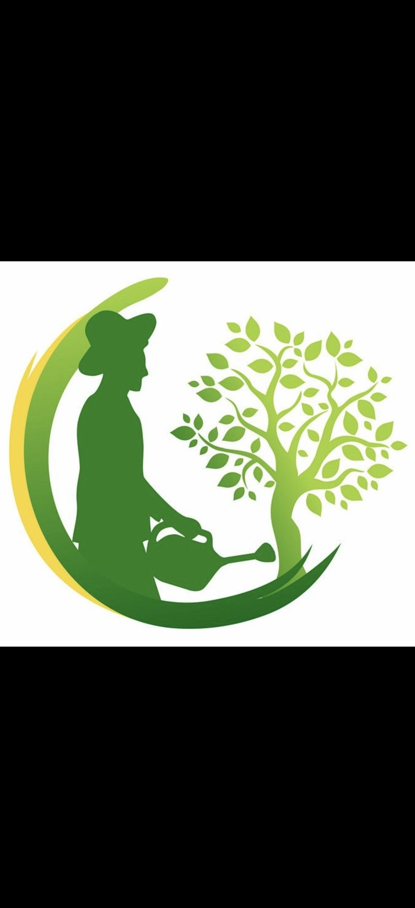

Producción agropecuaria
Mandioca y otros rubros de autoconsumo y renta en la zona insular.
San Antonio, Paraguay
Organización de productores que defiende el trabajo rural, mejora el acceso a la producción y se prepara ante los factores climáticos.
Entidad civil sin fines de lucro. Su estatuto fue protocolizado por escritura pública N.° 19 del 10/10/2022 (Escribana Carmen Paredes Cabrera, Registro N.° 534) e inscripta en la Dirección General de los Registros Públicos en octubre de 2022.
Estamos establecidos formalmente en la zona de la Isla Ytororo, en San Antonio. Defendemos el valor del trabajo rural organizado y combinamos la experiencia del campo con la cooperación institucional para superar barreras logísticas y climáticas.
Impulsamos proyectos para mejorar los accesos viales, proteger la infraestructura de acopio ante crecidas fluviales y fomentar la capacitación técnica continua de nuestros socios.
Buscamos el mejoramiento social y económico de los productores mediante el trabajo colectivo: actividad agropecuaria, transformación y comercialización de productos, servicio marítimo y de cabotaje, defensa de los asociados ante las autoridades, promoción de la educación, la salud y el medio ambiente, y ejecución de proyectos productivos.
Productores de la zona mayores de edad que decidan voluntariamente formar parte. La Comisión Directiva aprueba cada solicitud y fija la cuota de ingreso.
Voz y voto en las asambleas, elegir y ser elegidos para cargos directivos, presentar proyectos de trabajo, participar de los beneficios de la asociación y apelar las sanciones.
Mandioca y otros rubros de autoconsumo y renta en la zona insular.
Seguimos las variaciones atmosféricas y el caudal del río para proteger las cosechas familiares. Ver el monitor.
Los 21 socios activos avanzan de manera coordinada en las labores de cultivo y optimización de parcelas para asegurar el rendimiento de los rubros de autoconsumo y renta.
Ante las variaciones atmosféricas y la fluctuación del caudal hídrico, la asociación implementa herramientas de seguimiento para proteger las cosechas familiares.
En la zona de la Isla Ytororo, en la ciudad de San Antonio, Paraguay.
Escríbenos por WhatsApp al 0982 879-980. Te respondemos con la información disponible.
Sí. Está inscripta en la Dirección General de los Registros Públicos con matrícula jurídica N.° 12581, serie Civil. Su estatuto fue protocolizado por escritura pública N.° 19 del 10/10/2022. Su RUC es 80130689-2 y figura como activo.
Impulsan proyectos para proteger la infraestructura de acopio y hacen seguimiento del caudal hídrico.
